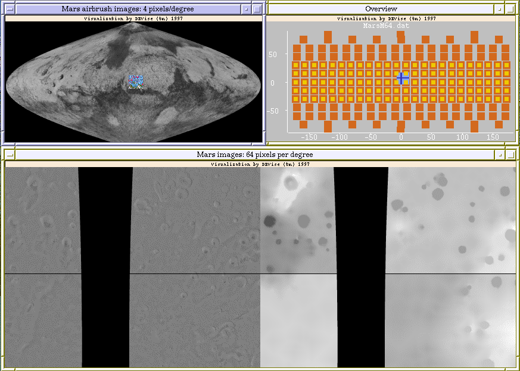

Mars Images Example

Input Data
The input data:
- consists of three sets of images.
- one large image of mars.
- one set of smaller, more detailed visible light images.
- one set of smaller, more detailed pseudocolor images.
The large image input file looks like:
/p/qclic/Images/Mars/scxxxxxx/sc00n000.img.pgm /p/qclic/Images/Mars/scxxxxxx/sc00n000.img.head 1 1 1440 720 0.0 0.0 90.0 -90.0 180.0 180.0 4 14.8065 360.0 720.0 3393.4 3393.4 3375.73 SINUSOIDAL 0 0 0 S
The visible light input file looks like:
/p/qclic/Images/Mars/tg00nxxx/tg00n007.img.pgm /p/qclic/Images/Mars/tg00nxxx/tg00n007.img.head 1 1 964 960 0.0 7.469 7.5 -7.5 15.0 359.938 64 0.925406 480.0 480.0 3393.4 3393.4 3375.73 SINUSOIDAL -1334 1418 61.006795 T
/p/qclic/Images/Mars/tg00nxxx/tg00n022.img.pgm /p/qclic/Images/Mars/tg00nxxx/tg00n022.img.head 1 1 964 960 0.0 22.4688 7.5 -7.5 30.0 14.9375 64 0.925406 480.0 480.0 3393.4 3393.4 3375.73 SINUSOIDAL -2032 1000 -326.755014 T
...
The pseudocolor input file looks like:
/p/qclic/Images/Mars/mg00nxxx/mg00n007.img.pgm /p/qclic/Images/Mars/mg00nxxx/mg00n007.img.head 1 1 964 960 0.0 7.469 7.5 -7.5 15.0 359.938 64 0.925406 480.0 480.0 3393.4 3393.4 3375.73 SINUSOIDAL 0 0 0 M
/p/qclic/Images/Mars/mg00nxxx/mg00n022.img.pgm /p/qclic/Images/Mars/mg00nxxx/mg00n022.img.head 1 1 964 960 0.0 22.4688 7.5 -7.5 30.0 14.9375 64 0.925406 480.0 480.0 3393.4 3393.4 3375.73 SINUSOIDAL 0 0 0 M
...
Problem
We have a collection of detailed images of the planet Mars. We want to use
DEVise to allow the user to easily select the detailed images for a particular
region of the planet.
Visualization
Click here to see our model of creating
visualizations.
The visualization is created as follows:
- Define the 'Mars airbrush images' view (with the large image data as
the data source, and longitude and latitude as the X and Y axes) and the
corresponding window.
- Define the 'Overview' piled views (with the pseudocolor and visible
light data as the data sources, and longitude and latitude as
the X and Y axes) and the corresponding window. (There is one view for
the visible light images and one view for the pseudocolor images.)
- Define the 'Mars images' views (with the pseudocolor and visible light
data as the data sources, and longitude and latitude as
the X and Y axes) and the corresponding window.
- Link the two 'Mars images' views on the X and Y axes so that they
always display the same region.
- Create cursors from one of the 'Mars images' views to the 'Mars airbrush
images' and 'Overview' views.
- Zoom in the 'Mars images' views until the images are shown at a
sufficiently high resolution.
Observations
Clicking in the 'Mars airbrush images' or 'Overview' views moves the
cursors in those views; this also causes the 'Mars images' views to
be updated to show the detailed images corresponding to the new location
of the cursor. The user can also move the cursor and view a different
region of the planet by using the arrow keys to scroll one of the 'Mars
images' views.
The user can use the 'Mars airbrush images' view to select a particular
region of the planet to view in detail. They can also use the 'Overviews'
view to see what images are available.
Back to DEVise home page.